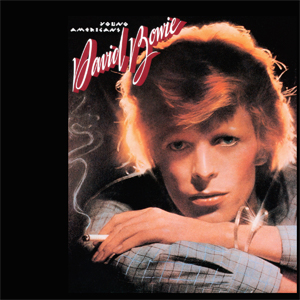
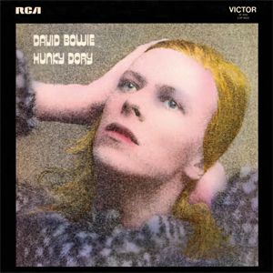
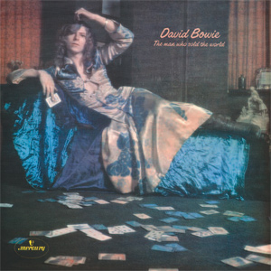
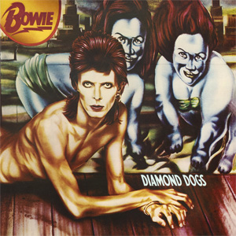
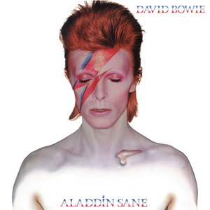
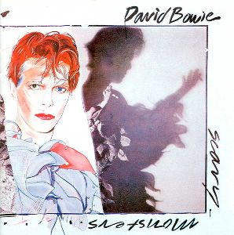
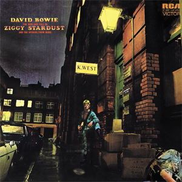
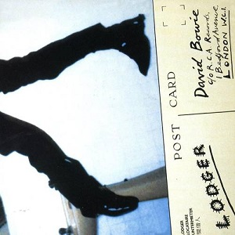
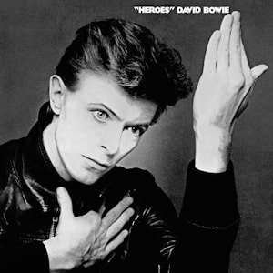
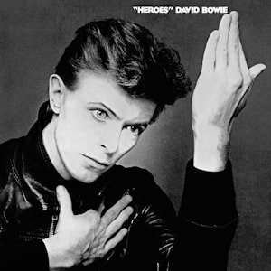

David Bowie - Worst to Best (70s)
posted 28/04/21
Bowie is one of the most iconic artists of all time, and should need no introduction. He's often described as a chameleon, and with great reason, as with albums spanning over multiple decades, somehow each of his albums are completely unique, and special in their own right. I can’t possibly attack all of his music, and admittedly I haven’t listened to all of it, so I’ll just focus in on the 70s, his most prolific era. There will be a few exceptions though:
I will discuss Scary Monsters (and Super Creeps), because it’s still Bowie near his artistic peak, it reflects on much of 70s Bowie, and 1980 is close enough to the 70s.
I will discuss Blackstar simply because it’s that incredible.
I will not discuss Pin Ups. I have listened to this once, a while ago, and based on the cover (and what I’ve heard of it and remember from my listen), I’m not touching this thing with a 10 foot stick.
Alright, let’s go.

12. Young Americans - 6/10
This is the only 70s release from Bowie that feels really underwhelming, the whole plastic soul sound just doesn’t work that well, and this album doesn’t have much else going for it. “Young Americans” is a cool moment out of everything here, but otherwise everything here just sounds okay. Not outright bad, but not remarkable in any way.

11. Hunky Dory - 7/10
This is Bowie’s most overrated release, by far, it’s really not even close. Hunky Dory feels like a regression from The Man Who Sold The World, where that felt like an interesting and uniquely glammy, “Bowie” approach to hard rock, Hunky Dory just feels like a generic glam album. Maybe this is a result of me listening in hindsight, perhaps I’d appreciate glam rock more when it was the prevailing music trend and Bowie was taking center stage. But 50 years later, it just sounds plain and dated.
This album is also plenty inconsistent, with not that many standout moments outside of the wonderful “Song For Bob Dylan” Dylan tribute and “Queen Bitch”. (Yes, “Changes” is not a standout track, the vocals on “Ch-ch-ch-ch-changes!” don’t sound great, I’m taking that to my grave). I’m being pretty critical (a.k.a. a hater), but the moments here that do work have plenty of charm to them. This is not a bad album by any means, just a very overrated one.

10. The Man Who Sold The World - 7/10
I could see this jumping a spot or two higher, I cannot deny it’s consistency. Near every song here is a great moment that elevates this album, I just don’t particularly enjoy the sound of this nearly as much as some other Bowie albums. As you can tell, I don’t really like glam rock all that much, and early 70s Bowie is not nearly as great as late 70s Bowie to me. But more on that later, for now let’s look at a couple of the standout moments that make this release a bit underrated and propel it over Hunky Dory.
“The Width of a Circle” is a surprising 8 minute track that I could not have possibly expected from Bowie on just his third release. Aside from the length it’s not too out of left field, but it’s certainly a clear cut above his earlier material, and an incredibly enjoyable and fun track.
“All The Madmen” is another fantastic cut where Bowie shines lyrically. I love how he describes the plight of this supposed madman throughout the song and the coldness and rigidity of society.
“The Man Who Sold The World” is a wonderful track and everyone knows it. I don’t think I need to elaborate, the guitar here is beautifully incorporated, the lyrics are wonderful, and the vocal performance is stellar. Definitely the best track on the record.

9. Diamond Dogs - 7/10
Evaluating this album is so difficult, mainly because I don’t know how I feel about the sound of this record. On one hand, it’s still a lot of glam Bowie on display, and it feels like a regression from the varied Aladdin Sane. On the other hand, the dark, post-apocalyptic setting album shines through musically, and makes this sound clearly different from all of previous releases. And thus, I’ve settled here, this album is a middle of the pack Bowie album, at least for his early 70s output. There’s only one real standout here for me, and that’s the popular “Rebel Rebel”. The overall aesthetic is enough to make me like this album, but not quite love it, as a lot of the songs here are good, but don’t stick out as great.

8. Aladdin Sane - 7/10
The album is often referred to as “Ziggy Goes to America”, which I see throughout some of the tracks here lyrically, but have never thought to really be a unifying theme or concept for the record. And sonically, this sounds nothing like Ziggy at all, I wouldn’t have even known this album came so soon after Ziggy just by hearing it. Aladdin Sane is its own distinct album, with its own distinct character, Aladdin Sane himself. I really like the “A Lad Insane” pun on display, and it’s used extremely well on the title track, the best cut here.
“Aladdin Sane” is one of many great moments on a stellar first half. Though there isn’t a ton of cohesion between tracks here, every track is a bonafide hit, so I can potentially overlook this and appreciate what this half has to offer. It doesn’t make for Bowie’s best work all-time, but this is certainly his early 70s peak. Of all of his characters, Aladdin Sane comes across as one of the most compelling on this half.
Unfortunately, this album is bogged down by the second half, which isn’t nearly as consistent. “Time” is an unfortunately named (with respect to far superior Pink Floyd “Time” released the same year), relatively flat track here, and doesn’t fit particularly well with most of what happens here. But the real offender here is “Let’s Stay the Night Together”, which covers the Rolling Stones’ track of the same name, while adding a slight twist towards the end. Unfortunately, this track is just clunky and the instrumental doesn’t work well, and the added section completely halts the track in a really unflattering way, completely ruining the pacing of the track. “Jean Genie” and “Lady Grinning Soul” are neat highlights on this half, but don’t quite stack up to the hits on the first track, making for a somewhat inconsistent album.
All in all, 8-10 are pretty interchangeable, and the order I’ve picked pretty much comes down to how much I enjoy the sound of each (definitely not arbitrary and subjective at all, these rankings are objectively indisputable!). Each has their strengths and weaknesses, and while I find myself returning to Aladdin Sane the most, all of these albums (and fine, even Hunky Dory) are great, and will attract different types of music listeners and Bowie lovers.

7. Scary Monsters (and Super Creeps) - 8/10
Scary Monsters sees an older Bowie looking back on his career and life thus far, and reevaluating his place in the world in light of what he’s learned. Bowie doesn’t seem to be trying hard to make a grand artistic statement, or challenge himself to make something innovative and cutting edge. This is simply Bowie, chilling on the patio with a cup of tea and reflecting on the 70s, albeit somewhat critically. For the most part this is a relatively tame, normal album compared to several moments in the Berlin Trilogy that preceded it, though there are certainly some wild, oddball moments (see “Scary Monsters (and Super Creeps)” and “It’s No Game (Part 1)”).
This first half of this album is stellar. I’m not a fan of the Japanese vocals on the opening track, but aside from that, every moment here is wonderful. “Up The Hill Backwards” is lyrically blunt and powerful, and the outro that juxtaposes it is wonderfully potent and invigorating. “Scary Monsters (and Super Creeps)” is downright creepy, in the best way possible. “Ashes to Ashes” is a Bowie classic, and for good reason, it puts an interesting twist on the classic story of Major Tom from “Space Oddity”, with a clever callback to the “Station to Station” title, capturing the sad, cyclical life Tom is found to live. “Fashion” is admittedly a bit silly, but I can’t help but love the lyrics, and think they sell Bowie’s point on conformity pretty effectively.
The second half is a bit weaker, but not without standout moments as well. “Scream Like a Baby” is perhaps the most emotionally powerful track here. Given Bowie’s experiences with the coverage of homosexuality and bisexuality in the media, he presents a surprising approach to grappling with the poor treatment of those in his community, slowly learning to fade into societal norms to avoid facing the cruel fate he’s seen others go through. This song captures the essence of the themes across the album, the dichotomy between idealism and realism and how this affects our approach and outlook on life: revolting and conforming on the two extremes.
This album is incredible, but is not quite as consistent as some of the albums to come on this list.

6. The Rise and Fall of Ziggy Stardust and the Spiders from Mars - 9/10
Remember when I said that I think Hunky Dory was Bowie’s most overrated album? I may have lied. Ziggy is an incredible album, undoubtedly a classic, and I don’t think I should really be under fire for giving it a 9/10. But is it Bowie’s best work? Absolutely not.
Before I attempt to explain my low ranking, let’s discuss what does work about it.
“Soul Love” is so wonderfully catchy and enjoyable, I don’t think it’s possible to not groove along to this song. I’m far from the biggest fan of sax playing, and I’d likely call this instrumental dated in most contexts. I don’t even love Bowie’s vocal performance here that much, but altogether with that melody, it just works. I can’t explain it (probably because I don’t know a thing about describing music technically)
“Starman” is maybe the best track here, again with a fantastic melody accompanied by a great acoustic guitar line throughout the track. I love the lyrics depicting the Ziggy character here, some out of this world being descending to the Earth from the stars to spread his joy through his music.
“Lady Stardust” is my favorite track here, for how it paints Ziggy as an androgynous rockstar, then demands that you focus on his music and not his appearance. This song makes a really compelling statement on the appearance and theatrics of artists, and how much that affects our perception of their music and messages. I also love how much Bowie focuses on the feminine aspect of Ziggy’s character for the bulk of the track, and inserts a brief “get some pussy now” to depict the male aspect. It’s interesting how he critiques the music industry as taking what is likely a very nuanced character with a complex sexuality and turning him into nothing but a feminine glam star. I don’t want to label Bowie as bisexual, since I have no idea how he would want to identify himself, but as a bisexual man myself, I found this really powerful and telling for how society wants to take something nuanced and complex and shove it into a binary category.
“Hang on to Yourself” and “Suffragette City” are catchy as hell, though I do think the latter goes on for a bit too long.
“Rock n Roll Suicide” features one of Bowie’s best lyrical and vocal performances ever. This song is brilliant, and ends the record off spectacularly.
My issue with this album is not that it’s not good, it’s great. A better way to put it would be, I don’t necessarily think this is egregiously overrated, I think every album above it on this list is criminally underrated. Yes, compared to how much praise and acclaim this receives, even Low is underrated. Ziggy just doesn’t have the thematic cohesiveness, the boundary pushing innovations, or the emotional power to stack up to the next 5 albums on this list (not to say it has none of these qualities, but these other albums are simply better in these areas). I’m also definitely not the biggest fan of Bowie’s glammy, somewhat nasal (I hope that describes it well) vocals, which I don’t think are as sonically pleasing or emotionally gripping as those on his late 70s albums. Much of my criticism of this album is certainly very taste dependent and nitpicky, and most artists would be lucky to have a Ziggy in their discography. But this is Bowie we’re talking about, and I simply think he has much better music in his catalog.

5. Lodger - 9/10
Okay, I know I just got done talking about boundary pushing innovation and emotional power, and I would be disingenuous applying those terms to this album. That being said, this album still has a tight concept, a killer consistent tracklist, and an impeccable flow that keeps you coming back for more. This may seem rather plain compared to an album like Ziggy, and especially compared to the preceding Berlin albums, but I think the simplicity and down to Earth nature of this album is a strength, not a weakness. This is easily Bowie’s most underrated album, let’s get into why I think so.
First, let’s tackle the concept at play here, and the connection to the rest of the albums in the Berlin Trilogy. And that is the last time I will refer to this as the Berlin Trilogy, since not a single second of this album was recorded in Berlin, and this album is quite different from its predecessors. Brian Eno is still clearly here, but his influence takes on a completely different form. By this point, Eno had worked with Talking Heads on their second album (and probably some of their third album), and this influence isn’t necessarily directly brought over. This isn’t Bowie meets Talking Heads, but it’s also not Bowie meets Another Green World Eno. In the first half, this is Bowie meets sonic influences from around the world. This is introduced in “Fantastic Voyage”, where Bowie sings about the influence of his world travels on his view on the world and personal mental state, potentially feeling burdened by the weight of the depression he discovers in every corner of the world. Sonically, the influence becomes clear on “African Night Flight” and “Yassassin - Turkish For: Long Live”, where musical influences from around the world are clear as day.
The first half explored space, wonderfully tying together various global influences and experiences to paint Bowie as a traveling man. The second half of this album, in typical Eno fashion, is an entirely distinct experience where we see Bowie exploring time and reflecting on his life, similarly to Scary Monsters (and Super Creeps). But the approach here is entirely different, it’s not quite as focused on a central theme (like Scary Monsters did with the idealism vs realism dichotomy), nor does it feature a track quite as iconic as “Ashes to Ashes”. Instead, this is just an assortment of energetic tracks laying Bowie’s thoughts out there, it’s consistently great. The first standout here is “DJ”, which sees Bowie addressing how pervasive music is in society, and how much of a microscope is placed on DJs as a result, who must satisfy everyone without a pause in fear of losing their opportunity and livelihood. The next standout is “Look Back In Anger”, where Bowie looks at his past critically; this song is essentially a precursor to much of the material on Scary Monsters. The last standout here is “Repetition”, a song that is admittedly a bit clunky and took a while to grow on me. In most contexts this wouldn’t work, but it plays cleverly into the concept of the song, aptly described by the title. Bowie is examining a relationship here where the man is clearly the dominant force, and finds himself full of anger and regret as he fails to achieve the lofty heights he set for himself. He subsequently takes this anger out on his partner, and this is perfectly captured with my favorite line on the album: “Don’t hit her”. The delivery here is everything, it’s so dry and blunt, and so seemingly obvious to us that it’s treated like an afterthought. But it clearly doesn’t weigh on this guy, as he can’t see past himself.
I’ve been heaping a fair amount of praise on the tracks here, but perhaps nothing that clearly sets this above Scary Monsters or Ziggy. But I have yet to mention this album’s strongest asset, it’s pacing. I don’t know how much Eno contributed to this album, but I’m going to credit this to his influence, since he seems to accomplish this with every album he’s attached to (see Another Green World, Before and After Science, his work with Talking Heads, and the other Bowie albums we’ll get to). The pacing on this album is fantastic, every track fills its purpose perfectly in contributing just the right amount of energy or restraint, and this album as a result is much more than the sum of its parts. While it’s not really a part of the Berlin Trilogy, Lodger is a fantastic addition to Bowie’s and Eno’s discographies.
 


And now we get into Bowie's 10/10 albums, his masterpieces. Honestly I've rambled on for long enough, and I have full write-ups on each of these albums elsewhere, which you can find by clicking on the album. It's quite difficult for me to order these, but if I had to I would put them in the order you see here (with Low being his best).
Each one certainly has its case, with Blackstar's incredibly grim lyrics, Station to Station's unmatched consistency and fantastic vocal performances, "Heroes" emotional potency and iconic title track, or Low's richly textured, melancholic production. No matter what order you put them in, these 4 albums are (to me) what make Bowie one of most creative, bold, and expressive artists ever.